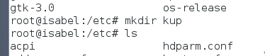
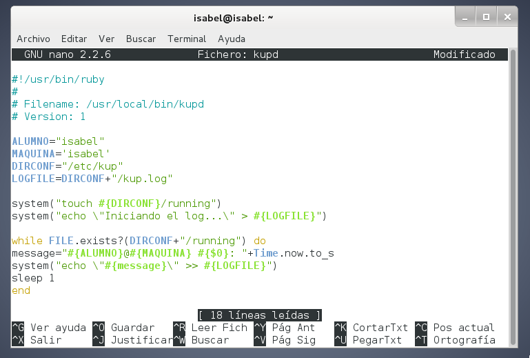
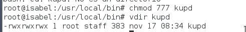
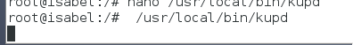
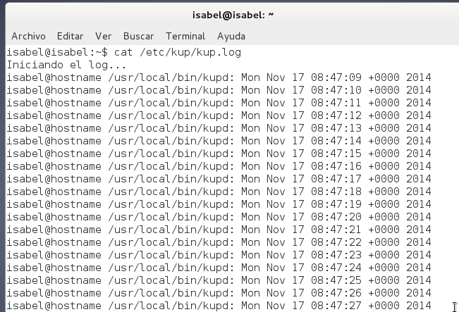
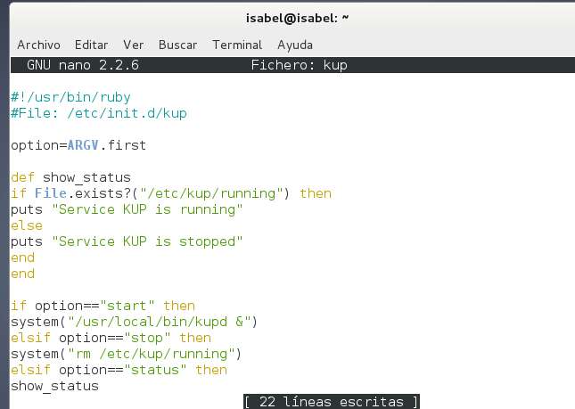
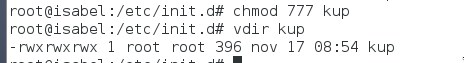
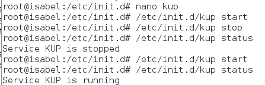
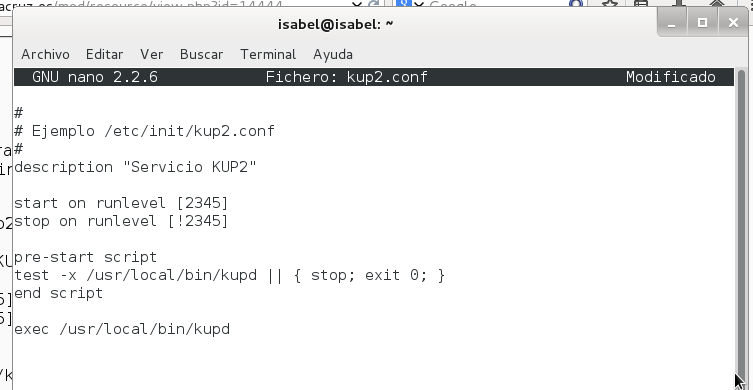

- Módulo: Administración de Sistemas Operativos
- Título del trabajo Crear un servicio
- Componentes del grupo: Isabel Quintero Sánchez
- Curso Académico: 2014/2015
- Fecha de entrega: 24 de Noviembre de 2014
Iniciamos el SO instalado con anterioridad (Debian 7) y creamos la carpeta "/etc/kup" y el fichero vacío "/etc/kup/kup.log".
Script demonio.
Creamos un script (/usr/local/bin/kupd) que será nuestro demonio. Este script será un bucle que ejecutará una tarea de forma repetitiva. En mi caso, utilicé el ejemplo escrito en Ruby.
Le damos permisos de ejecución y comprobamos su funcionamiento.
 Ejecutamos el siguiente comando: "cat /etc/kup/kup.log", para ver los mensajes que aparecen cada intervalo de tiempo.
Y, finalmente, paramos el servicio con el siguiente comando: "rm /etc/kup/running".
Script de control.
Ahora crear un script "/etc/init.d/kup", será un script que controlará el inicio/parada de nuestro demonio, al estilo System V. En el que utilizaremos el ejemplo escrito en Ruby.
Le damos permisos de ejecución y probamos que el guión funciona correctamente mediante el comando: "/etc/init.d/kup [start|stop|status]".
 Ahora vamos a configurar el servicio, al estilo Upstart.
Creamos un fichero "/etc/init/kup2.conf" con el contenido que nos proporciona la práctica:
El siguiente punto, sería descargarnos mediante el comando "apt-get install upstart", el paquete Upstart. En este caso, me da un error y me es imposible descargarlo, por lo que entrego la práctica hecha hasta ese punto.